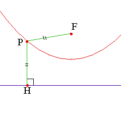

|
Parabola has following properties.
1.The distance from the point on the parabola to focus is equal to the distance to directrix. 2.We define the coordinates of F,P and H as (a, b), (x, y) and (x, -b) respectively. Since PF = PH (x - a)2+(y - b)2 = (y + b)2 The equation of parabola is y = (x - a)2/4b. |
 |
|